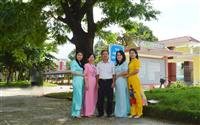
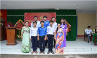
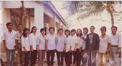
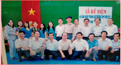
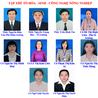
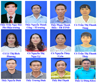

TỔ CHUYÊN MÔN
Tổ Sử-Địa-Công dân |
|
|  | Đồng hành cùng với sự hình thành và phát triển của trường THPT số 1 Phù Cát sau 50 năm (1967-2017) về quy mô vật chất, về tổ chức giữa các tổ, trong đó có tổ Sử- Địa- GDCD. |
Tổ Tin-QP | |
|  |
Trước đây giáo viên giảng dạy môn Tin học nằm trong Tổ Toán-Tin, giáo viên giảng dạy môn Quốc phòng nằm trong Tổ Anh-Quốc phòng-Thể dục. Trong quá trình phát triển, qui mô các tổ Toán-Tin, Anh-Quốc phòng-Thể dục ngày càng mở rộng, số lượng học sinh tăng, đội ngũ giáo viên cũng nhiều hơn. Để phù hợp với sự phát triển lớn mạnh của nhà trường. Đến năm 2012 do đặc thù của môn học và trên cơ sở một số giáo viên Quốc phòng có bằng ĐH Tin học nên nhà trường đã tách giáo viên Tin học và Quốc phòng ra và thành lập nên tổ Tin học-Quốc phòng. |
|  |
Thành lập từ 1967, đến nay, trường THPT số 1 Phù Cát sắp tròn 55 năm. Ngần ấy thời gian, với biết bao thăng trầm cùng đất nước, trường THPT số 1 Phù Cát đã vươn lên khẳng định vị trí hàng đầu của một cơ sở giáo dục bậc THPT của tỉnh Bình Định |
Tổ Lý-KTCN |
|
|
Cùng với sự hình thành phát triển và trưởng thành của trường THPT Số 1 Phù Cát, trong suốt 55 năm qua, tổ Vật lý – Công nghệ không ngừng đổi mới, phát triển và góp phần đáng kể vào sự nghiệp giáo dục và đào tạo của nhà trường. |
Tổ Toán |
|
|  |
Cùng với sự hình thành phát triển và trưởng thành của trường THPT Số 1 Phù Cát, trong suốt 55 năm qua, tổ Toán không ngừng đổi mới, phát triển và góp phần đáng kể vào sự nghiệp giáo dục và đào tạo của nhà trường. |
Tổ Hóa-Sinh-Công Nghệ Nông Nghiệp |
|
|  |
Quá trình hình thành và phát triển tổ Hóa-Sinh-Công Nghệ Nông Nghiệp |
Tổ Anh-Thể Dục |
|
|  |
Quá trình hình thành và phát triển Tổ Tiếng Anh-Thể Dục |